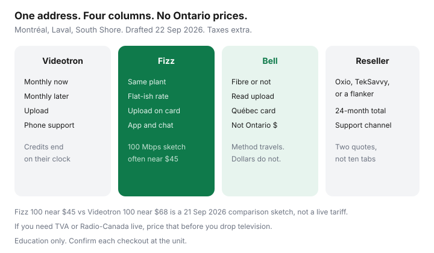

Internet · Montréal
How to Lower Your Home Internet Bill in Montréal: Videotron, Fizz, Bell, and Resellers
Montréal bills drift up in the same way as Toronto or Calgary bills, with a local cast: Videotron and its flanker Fizz on the cable plant, Bell where fibre or an older line reaches the unit, and resellers who rent that plant. Households on the island, in Laval, and on the South Shore keep paying a Helix promo that ended last year because nobody ran the address a second time. This is the second time. It is Québec bill math for a middle-aged household, not a national ranking, and it is not a Videotron or Bell offer.
Disclosure: Education only. Internet plans are an offer type. Saving Optimizer has no Videotron, Fizz, Bell, Oxio, or reseller partnership. Fizz.ca notes below were read 21 Sep 2026 and were not re-priced on 22 Sep 2026. Québec taxes and French-language contracts are yours to confirm. Not legal advice.
Key takeaways
- Map the unit, including Laval and South Shore addresses that are not “Montréal” to a checkout form. Videotron plant, Bell, and resellers do not cover every building.
- Fizz homepage notes used 21 Sep 2026: plans from $40 a month on 30 Mbps, modem included, no phone support. Comparison cards often put Fizz 100 near $45 and Videotron Internet 100 near $68. Verify both address tools. Offers on that Fizz page were described as valid until 30 September 2026.
- Do not paste Bell’s Ontario card onto a Québec bill. The Ontario mobility page fetched 21 Sep 2026 is an Ontario page. Read the Montréal upload.
- If the household watches TVA or Radio-Canada live, price that before you cancel TV. An English streaming bundle is not a substitute.
- One retention call, with the ETF in the same sentence as the quote. Then email.
Map what is available at your Montréal, Laval, or South Shore address
Use the full civic address and the apartment number. A triplex in Rosemont, a tower in Nun’s Island, and a bungalow in Boucherville are three different plants even when the marketing says “greater Montréal.”
- Videotron coaxial, and fibre-fed plant where they have built it. This is the default cable check.
- Fizz on that same plant, app-only. If Fizz’s tool says no, do not argue with a chatbot. The drop is not there.
- Bell at the same unit. Write “fibre to the premises” or “not fibre,” plus the upload. The method is the Fibe playbook. The Ontario dollar figures in that guide stay in Ontario.
- Resellers and flankers the checkout will name: Oxio where it rides Videotron or another qualifying plant, TekSavvy, EBOX or Distributel on Bell-family fibre, and other CCTS members the address tool lists. Two independents plus Fizz plus the incumbent is enough. Ten browser tabs are not a strategy.
Ask a condo board which carriers are in the riser before you book a technician who cannot get into the phone room. Bulk internet inside condo fees means a personal subscription is a second line. Price that before you “save.”

Videotron versus Fizz versus Bell after 12 to 24 months
The Fizz versus Helix guide holds the detailed card. Short version, from that 21 Sep 2026 read: Fizz starts at $40 on 30 Mbps with the modem-router included; 2026 comparison cards commonly show Fizz 100 around $45 and Fizz 500 around $55, against Videotron Internet 100 around $68, 500 around $75, and GIGA around $80. Fizz legal notes say the monthly rate stays put unless you change the plan or they email a general increase at least 60 days ahead. That is not a forever freeze. Videotron still uses credits and bundle discounts that look kind in month one.
| Line | Fizz 100 sketch | Videotron 100 sketch | Bell at this unit |
|---|---|---|---|
| Monthly × 24 if the rate holds | $45 × 24 = $1,080 | $68 × 24 = $1,632 | Use the Montréal checkout, not an Ontario card |
| After a promo dies | Watch for a 60-day increase notice | Credits end on their own clock. Re-shop. | Same. A two-year lock can remove credits if you change the service. |
| Upload | Whatever the cable card shows | Helix GIGA has been described around 1 Gbps down and 50 Mbps up on hybrid fibre-coax. Confirm. | Symmetrical only if the quote says fibre to the home |
| Support you are buying | App and chat. No phone number. | Phone and stores | Phone, and a tech visit when the plant needs one |
The gap between $1,080 and $1,632 is real only if both rates hold and you do not add TV you did not mean to keep. GST and QST sit on top. A Bell fibre upload can be worth more than that gap if two people work from home. It can also be a luxury. Decide that before the call, using the speed worksheet.
Resellers and independents worth a quote in Québec
Oxio’s pitch, where the address qualifies, is a flat rate and an included router, with online support and a satisfaction window described in the Oxio guide. TekSavvy is the phone-support independent: 12-month credits, then a higher rate, modem rules on the approved list. EBOX and Distributel show up when the glass is Bell’s and the retail brand is not. Treat flankers as a price on the same network, not as a second network.
Quote them the same day as Fizz. Write 24-month totals. A reseller that is $5 cheaper and chat-only is not a win if the household will not use chat. A reseller that is $20 cheaper on the same upload is the number you read to Videotron retention.
French and English bills, and contract lines to watch
Promo end dates are useless if they are in a language you will not read carefully. Ask for the contract and the bill in the language you will actually check. Québec language rules are a legal topic; this paragraph is only the household habit. Save the PDF. Circle the monthly rate, the credit end date, the term, and any early cancellation schedule.
Other lines that surprise people: a technician fee when self-install was available, a Wi-Fi pod added “for the back bedroom,” and a TV discount that expires on a different month from the internet credit. After 12 June 2026, a fee that is only “activation” or a no-visit speed change should not be on a new quote. A real install at the premises can still appear. The fee guide is the distinction. Equipment you do not return can still be billed.
Cord-cut stacks that keep French live TV
Many Montréal households do not want a full Helix package, and they also do not want to lose the 6 p.m. news. Before you cancel TV:
- Check whether an antenna at your address receives Radio-Canada and TVA. Concrete towers often do not. A north-facing balcony is not a promise.
- Price one small French live package, or the channels you will open, against the internet save. If live TV costs more than you save by leaving Helix, keep a thin TV line.
- Use the library, CBC Gem, and ICI Télé’s own apps for everything else. Put a ceiling on paid streaming so the stack does not regrow into a cable bill. The method is the cord-cutting stack.
A retention call when the bill spikes mid-contract
The spike is either a credit that ended or a term that is still running. Those are different calls.
- Look at the contract. If an ETF remains, write today’s buyout. If that buyout is larger than what Fizz or a reseller would save you over the leftover months, do not cancel to make a point.
- Call once. “I have a quote at this address for [speed] at [$] with [upload]. I will move on [date] unless you can put my internet line at [$] until [month]. Please email it.”
- Do not add TV back onto the account to “qualify” for a credit you do not want. That is how the bill grows.
- If you are month-to-month, you can leave. Overlap a few days, return the Helix gateway, keep the receipt. Fizz pause notes (21 Sep 2026) described a $10 pause, twice a year, up to six months. Useful for snowbirds. Not a reason to skip the address check.
Calendar the next cliff 45 days out. Montréal prices move. The household that wins is the one that re-shops the unit, not the one that finds a mythical permanent rate.
Sources & date stamps
- Fizz.ca homepage and legal notes, used 21 Sep 2026 — from $40 on 30 Mbps; modem included; no phone support; 60-day notice on a general increase; pause $10, max twice a year, max six months. Page described offers as valid until 30 September 2026. Not re-fetched 22 Sep 2026.
- Videotron comparison cards cited on the Fizz guide — Internet 100 / 500 / GIGA around $68 / $75 / $80 as a 2026 comparison set. Address tool wins.
- Bell Ontario Internet and Mobility page, fetched 21 Sep 2026 — Ontario only. Do not reuse the dollars in Québec.
- CRTC 2026-43 and CCTS fee page, 2 Sep 2026, re-read 22 Sep 2026 — activation versus a technician visit.
Frequently asked questions
Is Fizz slower than Videotron in Montréal?
Not by design. Fizz rides Videotron's plant. Evening congestion is a node story. A weak Wi-Fi radio in the apartment is a gear story. Compare the upload on the address card, then test on ethernet before you buy a faster tier.
Can I use an Ontario Bell price in Montréal?
No. Bell's Ontario Internet and Mobility cards, fetched 21 Sep 2026, are Ontario new-customer cards. Québec credits, taxes, and fibre availability differ. Run bell.ca at the Montréal civic address and read the upload. The winback method travels. The dollar figure does not.
What if I need French television and also want a lower internet bill?
Price a small French live package, or an antenna that actually receives Radio-Canada and TVA at your address, beside internet-only. Do not assume an English streaming bundle replaces TVA or the news your household watches. If the live package costs more than the internet save, keep a thin TV line and cut the fat channels.
Does Fizz have phone support?
Fizz says support is online: a virtual assistant, secure messaging, and a forum, with no phone number. That is acceptable for many households and a bad fit if someone in the home will not troubleshoot in chat during a work outage. Videotron phone support is part of what the higher bill buys.
What do I say when the bill jumps mid-contract?
Ask whether you are still inside a term and what the early cancellation fee is today. If the ETF is larger than the remaining save, ask retention for a credit through the end of the term and get it in writing. If you are month-to-month, a Fizz or reseller quote is the number you read to them. One call, then email.